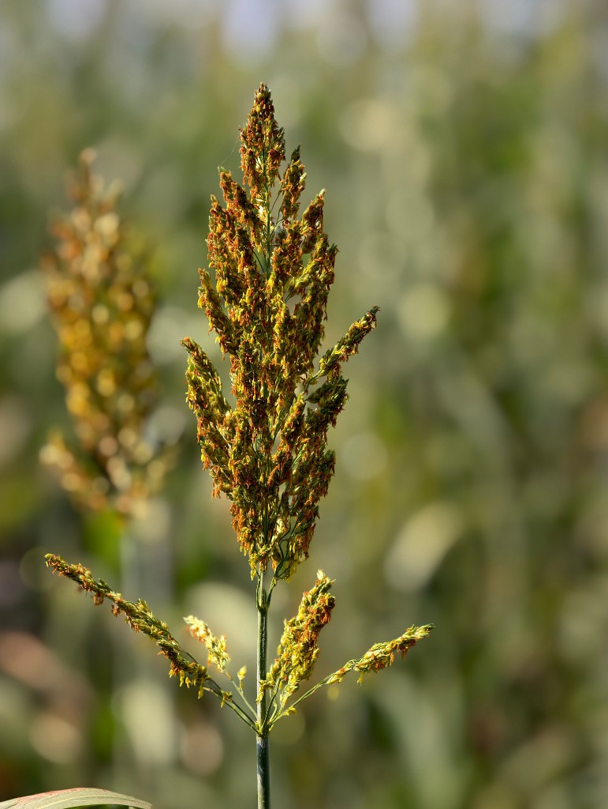
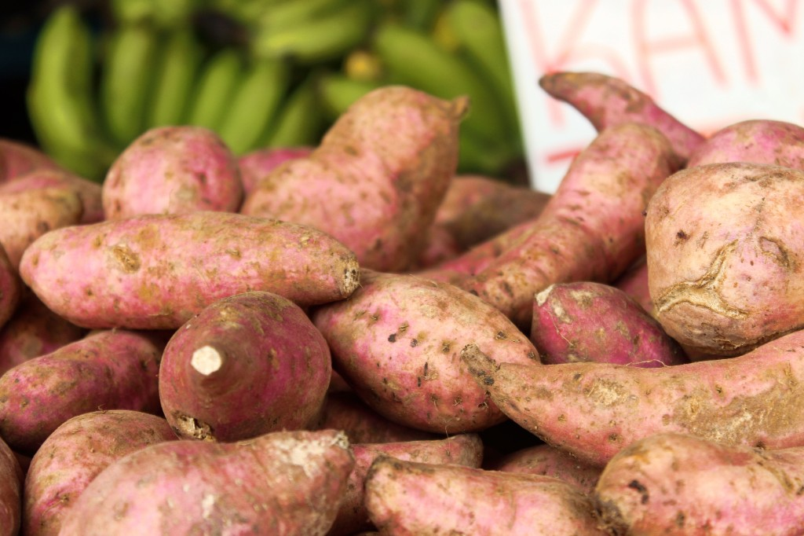
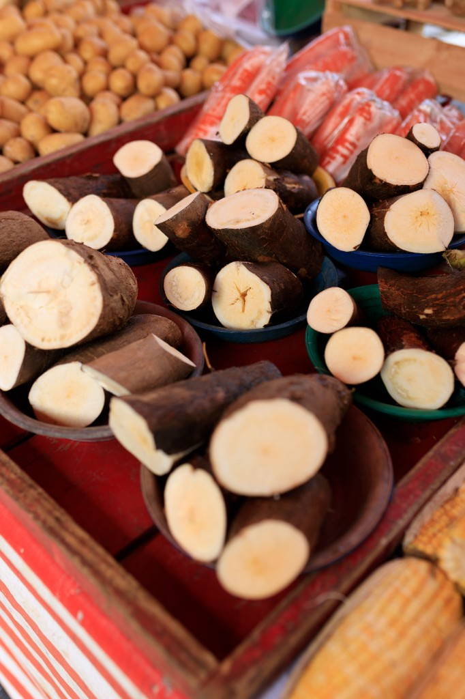

Drought-tolerant grains and root crops central to Sub-Saharan food culture. Select a crop to open its research dossier.

A resilient grain of dryland Africa.

A major root crop of West African diets.
A hardy cereal for arid climates.

A high-yield root crop that feeds millions.